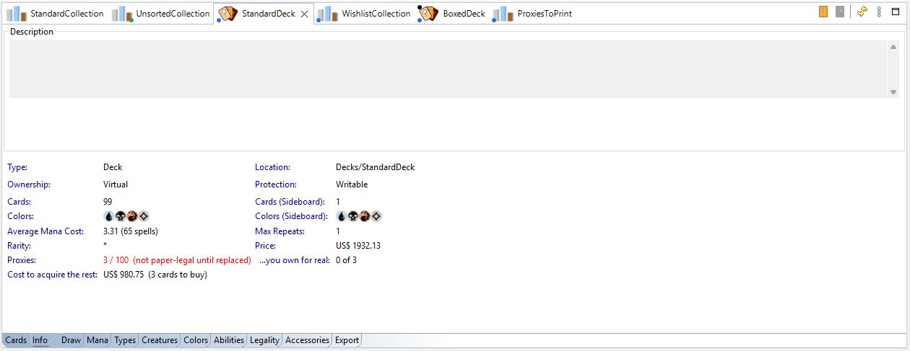
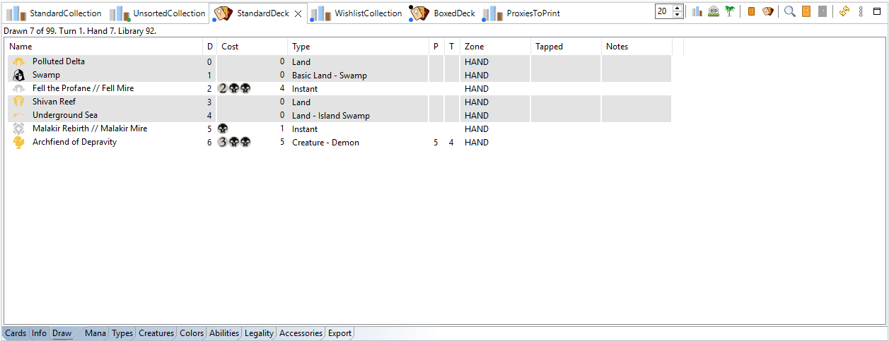
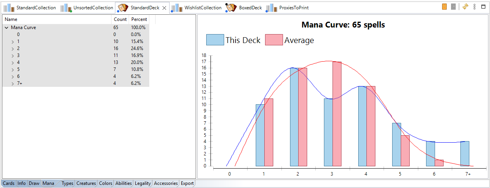
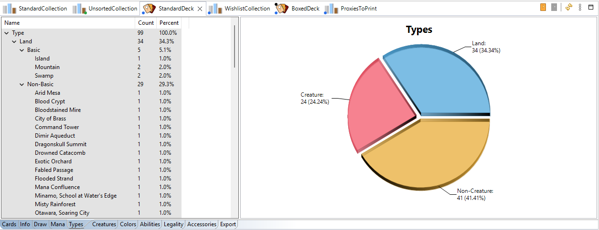
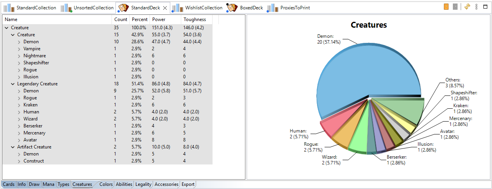
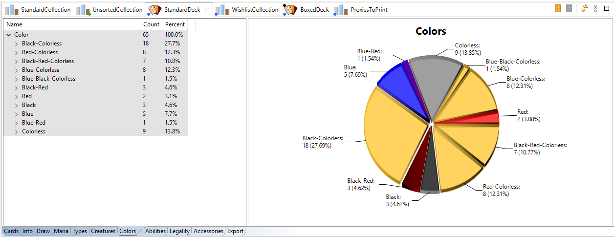
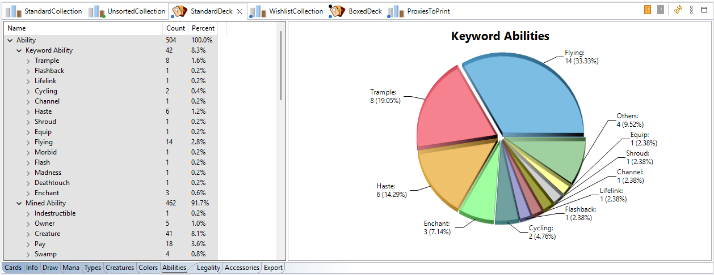
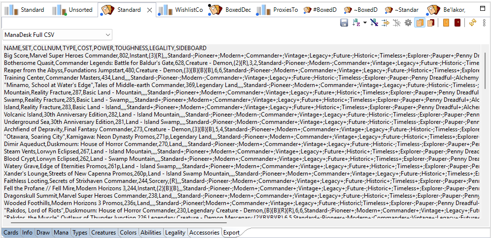

Every deck or collection you open gets its own tab in the top zone of the window. Double-click it in
the Card Navigator to open it. The tab icon carries the
status markers; a sideboard tab starts with # and an
extra list tab with ~.
The view has pages, as tabs along its bottom edge:
The card list, with all the usual tools (sort, group, filter, columns, Move to, Copy to, Edit Card...). Each deck and collection remembers its own View As, grouping, sort and filter, even after a restart; the columns are the same for all decks (and for all collections). Open Sideboard and Open Extra in the toolbar open the deck's sideboard and extra list, even when the Card Navigator doesn't show them (see Opening them).
A summary: type and location, card count (main deck and sideboard), colors, average mana cost, the maximum number of copies of a card, rarity mix, total price, and the deck's description. For decks, it also shows the proxies in the deck and what replacing them would cost (see Proxies).

A play-test table: New Game shuffles the deck and draws an opening hand; then Draw One, Mulligan, New Turn (untap and draw), Scry, and move cards between the hand, the battlefield, the graveyard, exile and the library. A life counter keeps the score.

Charts and tables to analyse the deck:





Whether the deck is legal in a format, and which cards are not. See Formats and legality.
The tokens, emblems, counters, player markers and dice the deck's cards need. See Accessories.
The deck as text in any export format, ready to copy, with a choice of format. It uses the same sort and filter as the Cards tab, so it exports the list as you see it there. See Exporting.

Collections open in the same kind of tab.
See also: Creating a deck · Formats and legality · Boxed decks